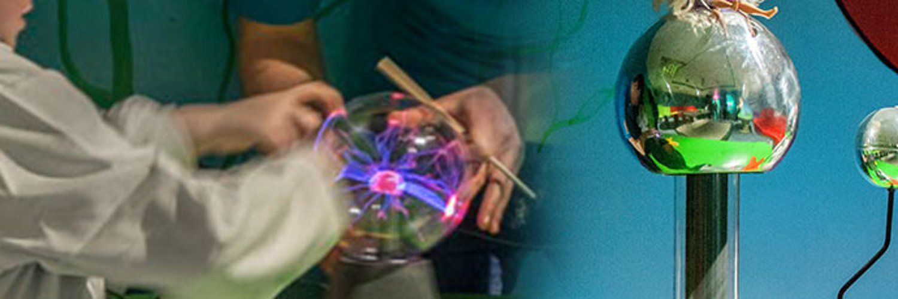
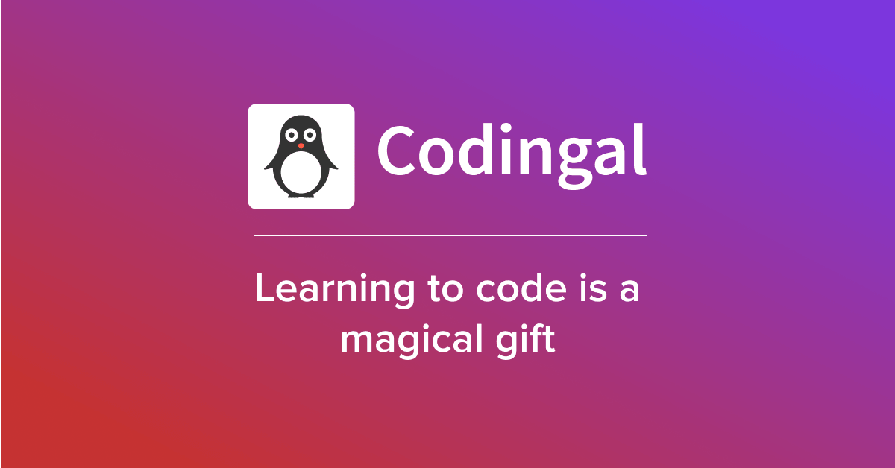
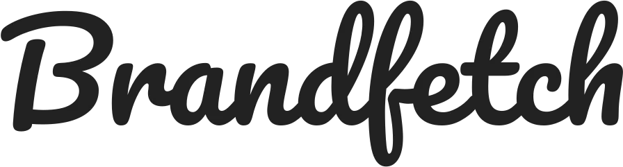
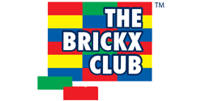
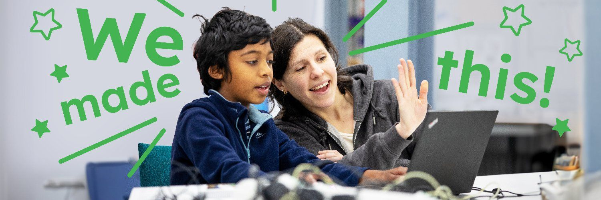
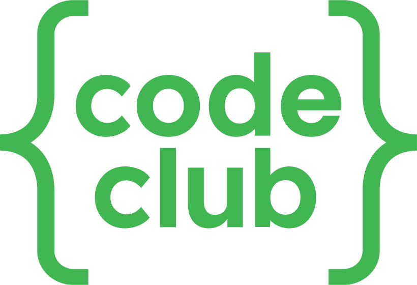
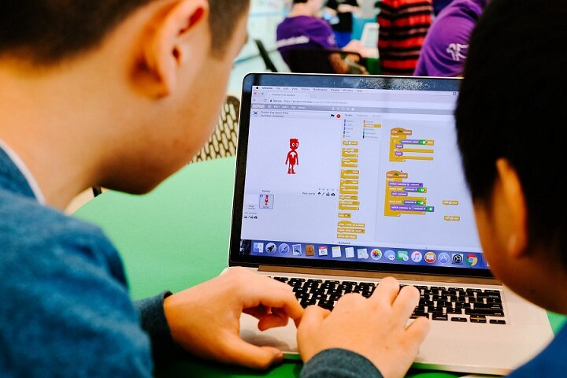
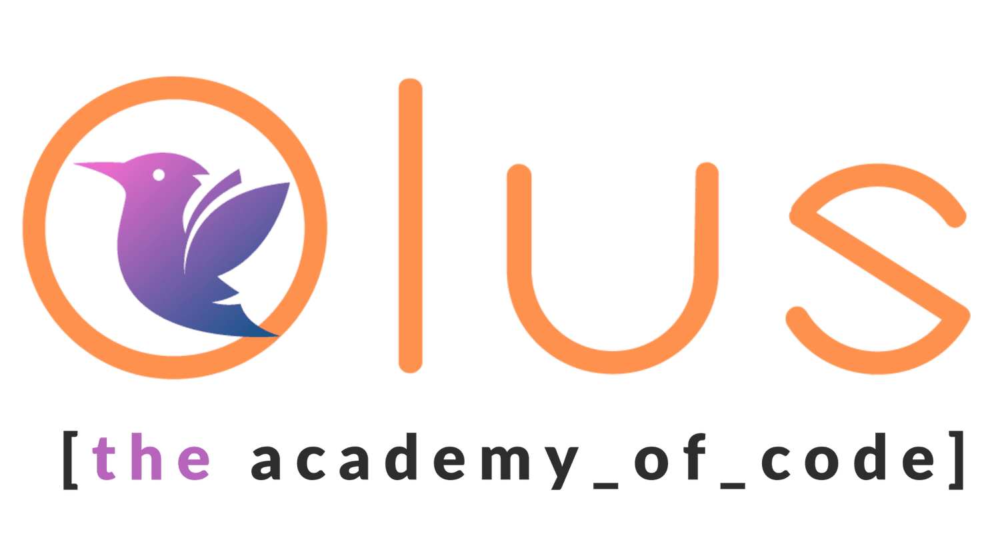

Explore 38 STEM classes and activities for kids across Ireland. STEM classes are most widely available in Dublin, Waterford, Cork.

Hands-on after-school science club for young children, using messy, high-energy experiments to build early curiosity about science, run weekly during the school term inside the school.
View full details →Hands-on after-school science club for early primary school children, using messy, high-energy experiments to build curiosity and early scientific thinking, run weekly during the school term inside the school.
View full details →A fun, hands-on playdough session where toddlers can squish, roll, and shape their own creations. This activity encourages creativity, fine motor skills, and sensory play, while also giving little ones the chance to socialise, share ideas, and play together. The Playdough Session runs Mondays and Thursdays from 10-10.30am, and toddler tickets include 2 hours' exploration of Junior Explorium. All mums, dads, grandparents and caregivers are welcome to stay. Free car parking. Coffee shop on site.
View full details →
Free online coding for kids and teens: dive into the world of coding with personalised guidance from expert tutors, learning game development, animation, website development, and app development. Book a free coding session: a 1:1 live online session, hands-on learning with an expert tutor, and STEM.org-accredited certification for participation. Time: daily from 5-9pm. Location: online. Open to kids from Grade 1-12, along with parents. You'll need a laptop with a working mic and camera.
View full details →
Neuroverse Explorers is a vibrant club designed for neurodivergent tweens and teens to explore, create, and connect. Dive into fun STEM activities, from experiments to tech projects, in a welcoming and inclusive space where you can be yourself. Whether you’re building, experimenting or just hanging out, this is a place to chill and make friendships. Thursdays from 4:45pm-6:15pm.
View full details →
Creative brick-building (LEGO-based) and STEM activity club for children, offering pre-school clubs, after-school clubs, Saturday workshops, parties and popular Easter, summer and midterm camps.
View full details →

CoderDojo believes that an understanding of programming languages is increasingly important in the modern world, that it’s both better and easier to learn these skills early, and that nobody should be denied the opportunity to do so! Any young person aged 7 – 17 can join and attend a Dojo for FREE! At a Dojo they will learn skills such as building a website, creating an app or a game, and explore technology in an informal, creative, and social environment.
View full details →Inventors Club offers small, hands-on coding classes designed just for kids. With tiny class sizes, every student gets the attention they need to grasp new concepts and build confidence. Their teachers are not only programming experts but also great at making complex ideas easy to understand. Kids learn coding through fun, bite-sized lessons that keep them engaged and excited to create - perfect for curious minds who love to tinker and invent.
View full details →KidsComp offers hands-on coding and robotics classes for children aged 5 and up. With a focus on interactive and fun learning, their classes help kids build problem-solving skills and gain confidence with technology. They offer in-person classes in community centres across Dublin, and online classes available nationwide. Led by coaches with computer science and maths backgrounds, KidsComp makes tech learning exciting and accessible for young minds.
View full details →

The Academy of Code offers coding courses for kids and teenagers aged 8-18 years in venues throughout Dublin. They de-mystify programming and technology, helping students see programmes, websites, apps and all sorts of gadgets and devices not as magical black boxes, but as relatable pieces of technology.
View full details →A dynamic and engaging children's activity programme focused on introducing kids to STEM concepts through fun, hands-on physical activities. Our mission is to spark curiosity and foster a love of learning in young children through play, exploration, and movement. 12.10pm in Ballincollig, 2.10pm in Carrigaline (both on Saturdays). Children can attend unsupervised, unless there is a specific reason for a parent to be present (e.g. child not toilet trained, etc.).
View full details →Creative brick-building (LEGO-based) and STEM activity club for children, offering pre-school clubs, after-school clubs, Saturday workshops, parties and popular Easter, summer and midterm camps.
View full details →Creative brick-building (LEGO-based) and STEM activity club for children, offering pre-school clubs, after-school clubs, Saturday workshops, parties and popular Easter, summer and midterm camps.
View full details →Creative brick-building (LEGO-based) and STEM activity club for children, offering pre-school clubs, after-school clubs, Saturday workshops, parties and popular Easter, summer and midterm camps.
View full details →Creative brick-building (LEGO-based) and STEM activity club for children, offering pre-school clubs, after-school clubs, Saturday workshops, parties and popular Easter, summer and midterm camps.
View full details →A dynamic and engaging children's activity programme focused on introducing kids to STEM concepts through fun, hands-on physical activities. Our mission is to spark curiosity and foster a love of learning in young children through play, exploration, and movement. 12.10pm in Ballincollig, 2.10pm in Carrigaline (both on Saturdays). Children can attend unsupervised, unless there is a specific reason for a parent to be present (e.g. child not toilet trained, etc.).
View full details →After-school coding, robotics and digital literacy programmes for ages 7-18 across several Dublin school venues.
View full details →Free, volunteer-led coding club for ages 7-17 at 34 Percy Place, Ballsbridge; sessions run Saturdays, parent/guardian must stay on site.
View full details →In-person coding classes for ages 5+ in Limerick using Scratch, Minecraft Education Edition and robotics/STEM kits; small class sizes.
View full details →Hands-on nature-based science and art activities for ages 7-15, Saturdays 10am-1pm at Tramore Coastguard Cultural Centre; €25/session.
View full details →Free volunteer-led coding club for ages 7-17, Saturdays 16:00-17:45 during term at Gaelscoil Philib Barúin; part of the global Code Club network.
View full details →Hands-on coding classes progressing from Scratch/MakeCode to Python and C; small class sizes.
View full details →Free kids computer club on Sundays; sign up via mailing list for weekly session booking links.
View full details →Free weekly CoderDojo coding club for ages 8-16, term-time; Scratch for beginners, micro:bit/Robocode/Java rotations.
View full details →After-school clubs (art, music, LEGO, coding, drama, GAA, soccer, athletics) for infants through senior classes.
View full details →Chemistry and science classes for home-schooled children aged 4-10 (Juniors 4-6, Seniors 7-10), Mondays at Leixlip Parish Centre.
View full details →Beginner-to-advanced coding for ages 7.5+ (STARTER/GAMER/DEVELOPER/ROBOTICS), Java/Python/PHP; graphical, hands-on teaching.
View full details →After-school LEGO-based STEM workshops, Juniors to 6th Class, term-time sessions.
View full details →Free volunteer-led coding club for ages 7-17 at Gouldshill Community Centre, Mallow.
View full details →Free kids coding sessions in Monaghan; weekly meetups building toward events like Coolest Projects.
View full details →Marine biology sessions at Ladies Slip, Tramore, exploring rock pools with pop-up lab microscopes.
View full details →Free youth coding club for ages 7-16, Saturdays at Athy College during term.
View full details →Java/Python/JavaScript/HTML5/CSS classes, Saturdays at Monread Community Centre, Naas; free trial class.
View full details →Free volunteer-led coding club for ages 7-17, run in 6-8 week blocks at Kells People's Resource Centre.
View full details →Free coding club for ages 7-17: self-guided learning, badges and belt progression, community projects.
View full details →Lego and basic coding club for ages 10+, twice-monthly Wednesdays; booking essential.
View full details →8-week hands-on STEM afterschool club for 1st-6th class, Wednesdays at St Josephs Hall; €100.
View full details →Free CoderDojo-style coding club for ages 7-17, running since January 2015.
View full details →